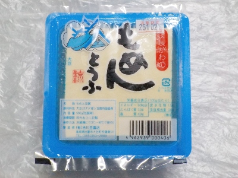

吉川豆腐店のもめんとうふを食べたことありますか？
島根県出雲市大社杵築東511
更新日 : 2025/10/19

普段豆腐はあまり食べないです。好きとか嫌いじゃなくて、あえて豆腐を買って食べる必要がないかなって思ってます。
大豆だったら豆のまま食べればいいじゃない。納豆食べればいいじゃない。お味噌食べてるからいいじゃないって感じです。後、きな粉もあるし。
でもこの少し薄いブルーのパッケージを見たら、どんな味だろう？って思って買いました。青いパッケージの食品って目立ちますね。
水に入っていない型に流し込んだタイプの豆腐とは食感が違いますね。なめらかじゃないぶん豆腐らしい風味とか食感がありました。味わい深い感じです。
均一でつるんとした感じもいいですが、これは何食べてるんだ？豆腐プリンなのか？みたいな不思議な感覚になることがあるんですが、これは豆腐だって気分で食べれました。